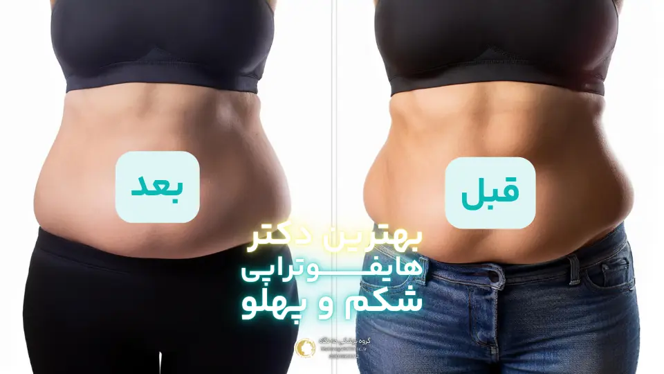
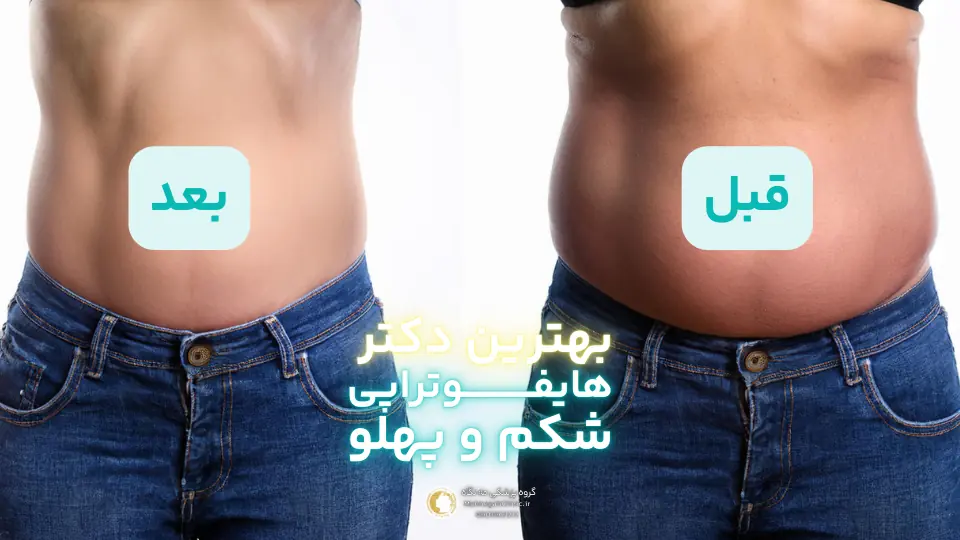
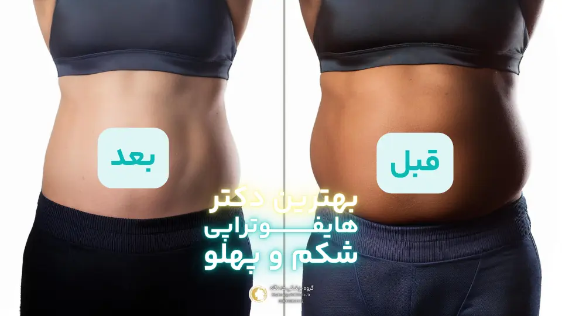
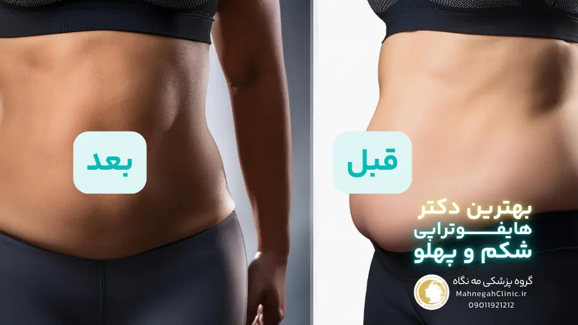

خانه / مجله / لاغری و کاهش وزن
بهترین دکتر هایفوتراپی شکم در سعادت آباد کیست؟
جواب مستقیم به این سوال این است که در حال حاضر بهترین دکتر هایفوتراپی شکم در سعادت آباد خانم دکتر فریده محمدی میباشند که در گروه پرشکی مه نگاه مشغول فعالیت هستند. برای مشاوره رایگان با ایشان لطفا اینجا کلیک کنید.
چرا سعادت آباد ؟
سعادت آباد، به عنوان یکی از مناطق پیشرفته و مدرن تهران، به مرکزی برای ارائه خدمات زیبایی و درمانی با کیفیت تبدیل شده است.
این منطقه با دارا بودن کلینیکها و مراکز زیبایی مجهز و پیشرفته، و همچنین حضور پزشکان متخصص و مجرب در زمینه هایفوتراپی شکم، به یکی از بهترین گزینهها برای انجام این روش تبدیل شده است. در ادامه به برخی از دلایل انتخاب سعادت آباد برای هایفوتراپی شکم میپردازیم.
دسترسی به بهترین متخصصان و کلینیکهای زیبایی
سعادت آباد با داشتن کلینیکهای زیبایی متعدد و پزشکان متخصص در زمینه هایفوتراپی شکم، امکان دسترسی به بهترین خدمات را برای شما فراهم میکند. این متخصصان با تجربه و دانش بالا در این زمینه، میتوانند بهترین روش درمانی را برای شما انتخاب کرده و با استفاده از تجهیزات پیشرفته، نتایج مطلوب و ماندگاری را برای شما به ارمغان بیاورند.
استفاده از جدیدترین تکنولوژیها و تجهیزات
کلینیکهای زیبایی در سعادت آباد با بهرهگیری از جدیدترین تکنولوژیها و تجهیزات هایفوتراپی، امکان انجام این روش را با دقت و ایمنی بالا فراهم میکنند.
این تجهیزات با تمرکز دقیق امواج اولتراسوند بر روی لایههای هدف در پوست، باعث کاهش عوارض جانبی و افزایش اثربخشی درمان میشوند. همچنین، استفاده از تکنولوژیهای جدید، باعث کاهش زمان درمان و افزایش راحتی بیمار میشود.
علاوه بر این موارد، سعادت آباد با داشتن امکانات رفاهی و دسترسی آسان، محیطی آرام و مطمئن را برای انجام هایفوتراپی شکم فراهم میکند. همچنین، رقابت بین کلینیکهای زیبایی در این منطقه، باعث ارائه خدمات با کیفیت بالا و قیمتهای مناسب میشود.
در نهایت، انتخاب سعادت آباد برای هایفوتراپی شکم، به شما این امکان را میدهد تا از بهترین خدمات و تکنولوژیها بهرهمند شوید و به نتایج دلخواه خود دست یابید. با انتخاب یک پزشک متخصص و مجرب در این منطقه، میتوانید با اطمینان خاطر، هایفوتراپی شکم را انجام داده و از زیبایی و جوانی پوست خود لذت ببرید.
چگونه بهترین دکتر هایفوتراپی شکم در سعادت آباد را پیدا کنیم؟
یافتن بهترین دکتر هایفوتراپی شکم در سعادت آباد نیازمند تحقیق و بررسی دقیق است. در این مسیر، میتوانید از روشهای مختلفی استفاده کنید تا بهترین گزینه را برای خود انتخاب کنید. در ادامه به برخی از این روشها میپردازیم.
تحقیق و بررسی آنلاین
اینترنت یکی از بهترین منابع برای یافتن اطلاعات درباره پزشکان و کلینیکهای هایفوتراپی شکم در سعادت آباد است. میتوانید با جستجوی کلمات کلیدی مانند "بهترین دکتر هایفوتراپی شکم در سعادت آباد"، "هایفوتراپی شکم سعادت آباد" یا "متخصص هایفوتراپی شکم در سعادت آباد" در موتورهای جستجو، به وبسایتها، مقالات و نظرات کاربران درباره پزشکان مختلف دسترسی پیدا کنید. همچنین میتوانید از شبکههای اجتماعی و انجمنهای آنلاین برای کسب اطلاعات بیشتر و مقایسه پزشکان استفاده کنید.
مشاوره با متخصصان و دریافت نظرات دیگران
یکی دیگر از راههای موثر برای یافتن بهترین دکتر هایفوتراپی شکم در سعادت آباد، مشاوره با متخصصان و دریافت نظرات دیگران است. میتوانید با پزشک عمومی یا متخصص پوست خود مشورت کنید و از آنها بخواهید تا پزشکانی را که در زمینه هایفوتراپی شکم تخصص دارند، به شما معرفی کنند.
همچنین میتوانید از دوستان و آشنایانی که تجربه هایفوتراپی شکم داشتهاند، نظراتشان را درباره پزشکان مختلف جویا شوید.
علاوه بر این موارد، میتوانید با مراجعه به کلینیکهای زیبایی در سعادت آباد و گفتگو با پزشکان و کارکنان آنها، اطلاعات بیشتری درباره روشهای درمانی، تجهیزات مورد استفاده و هزینهها کسب کنید. همچنین، میتوانید از آنها بخواهید تا عکسهای قبل و بعد بیماران قبلی را به شما نشان دهند تا بتوانید نتایج واقعی هایفوتراپی شکم را مشاهده کنید.
در نهایت، برای انتخاب بهترین دکتر هایفوتراپی شکم در سعادت آباد، مهم است که وقت کافی برای تحقیق و بررسی صرف کنید و با پزشکان مختلف مشاوره کنید. با مقایسه تخصص، تجربه، تجهیزات و نظرات بیماران قبلی، میتوانید بهترین گزینه را برای خود انتخاب کرده و از نتایج هایفوتراپی شکم خود راضی باشید.

معیارهای انتخاب بهترین دکتر هایفوتراپی شکم در سعادت آباد
انتخاب بهترین دکتر هایفوتراپی شکم، تصمیمی حیاتی است که میتواند تأثیر بسزایی در نتیجه درمان و رضایت شما داشته باشد. در این مسیر، توجه به چند معیار اساسی میتواند به شما در انتخاب بهترین گزینه کمک کند.
تخصص و تجربه پزشک
یکی از مهمترین معیارها در انتخاب بهترین دکتر هایفوتراپی شکم، تخصص و تجربه پزشک است. اطمینان حاصل کنید که پزشک مورد نظر شما دارای تخصص و گواهینامههای لازم در زمینه هایفوتراپی است و تجربه کافی در انجام این روش درمانی، به ویژه در ناحیه شکم، دارد.
میتوانید سوابق تحصیلی، مدارک و گواهینامههای پزشک را بررسی کنید و از او درباره تعداد جلسات هایفوتراپی شکم که تاکنون انجام داده است، سؤال کنید.
استفاده از تجهیزات پیشرفته و مدرن
تجهیزات مورد استفاده در هایفوتراپی شکم نقش مهمی در اثربخشی و ایمنی درمان دارند. اطمینان حاصل کنید که پزشک مورد نظر شما از جدیدترین و پیشرفتهترین تجهیزات هایفوتراپی استفاده میکند.
این تجهیزات با دقت و تمرکز بالاتری امواج اولتراسوند را به لایههای هدف در پوست میرسانند و باعث کاهش عوارض جانبی و افزایش اثربخشی درمان میشوند.
علاوه بر این دو معیار، میتوانید به موارد دیگری نیز توجه کنید، از جمله:
- نظرات و بازخوردهای بیماران قبلی: میتوانید نظرات و بازخوردهای بیماران قبلی پزشک را در وبسایتها، شبکههای اجتماعی یا انجمنهای آنلاین بررسی کنید. این نظرات میتوانند به شما درک بهتری از تجربه دیگران با پزشک مورد نظر بدهند.
- محیط کلینیک و رفتار کارکنان: محیط کلینیک و رفتار کارکنان نیز میتواند نشاندهنده کیفیت خدمات ارائه شده باشد. اطمینان حاصل کنید که کلینیک دارای محیطی تمیز، آرام و حرفهای است و کارکنان آن با احترام و صمیمیت با بیماران برخورد میکنند.
- هزینه درمان: هزینه هایفوتراپی شکم میتواند بسته به عوامل مختلفی مانند تخصص پزشک، تجهیزات مورد استفاده و تعداد جلسات درمانی متفاوت باشد. قبل از انتخاب پزشک، حتماً درباره هزینهها و شرایط پرداخت با او صحبت کنید.
با توجه به این معیارها و انجام تحقیقات لازم، میتوانید بهترین دکتر هایفوتراپی شکم در سعادت آباد را برای خود انتخاب کنید و از نتایج درمانی خود راضی باشید. به یاد داشته باشید که انتخاب پزشک مناسب، اولین قدم برای دستیابی به یک تجربه درمانی موفق و رضایتبخش است.

مراحل انجام توسط بهترین دکتر هایفوتراپی شکم در سعادت آباد
انجام هایفوتراپی شکم یک فرایند نسبتاً ساده و سریع است که معمولاً در یک جلسه انجام میشود. با این حال، برای اطمینان از بهترین نتیجه و کاهش هرگونه عوارض جانبی احتمالی، طی کردن مراحل زیر ضروری است.
مشاوره اولیه و ارزیابی
در ابتدا، شما با پزشک متخصص هایفوتراپی شکم مشاوره خواهید داشت. در این جلسه، پزشک وضعیت شما را ارزیابی میکند، اهداف شما را بررسی میکند و در مورد انتظارات واقعبینانه از درمان با شما صحبت میکند. همچنین، پزشک ممکن است در مورد سابقه پزشکی شما، داروهایی که مصرف میکنید و هرگونه حساسیت یا بیماری پوستی که دارید، سؤال کند. این اطلاعات به پزشک کمک میکند تا بهترین برنامه درمانی را برای شما طراحی کند.
آمادهسازی برای هایفوتراپی
قبل از شروع هایفوتراپی، ناحیه شکم شما تمیز و ضدعفونی میشود. سپس، پزشک ممکن است از یک ژل مخصوص بر روی پوست شما استفاده کند تا امواج اولتراسوند به راحتی به لایههای عمیقتر پوست نفوذ کنند. در برخی موارد، ممکن است پزشک از بیحسی موضعی برای کاهش هرگونه ناراحتی احتمالی در طول درمان استفاده کند، اگرچه هایفوتراپی معمولاً بدون درد است.
پس از آمادهسازی، پزشک دستگاه هایفوتراپی را بر روی پوست شما قرار میدهد و شروع به ارسال امواج اولتراسوند متمرکز به لایههای هدف در پوست میکند. شما ممکن است در طول درمان احساس گرما یا سوزن سوزن شدن خفیفی داشته باشید، اما این احساسات معمولاً قابل تحمل هستند و پس از درمان به سرعت از بین میروند. مدت زمان درمان بسته به اندازه ناحیه تحت درمان و تعداد جلسات مورد نیاز متفاوت است، اما معمولاً بین 30 تا 90 دقیقه طول میکشد.
پس از اتمام هایفوتراپی، پزشک ژل را از روی پوست شما پاک میکند و ممکن است از یک کرم مرطوبکننده یا ضد آفتاب استفاده کند. شما میتوانید بلافاصله پس از درمان به فعالیتهای روزمره خود بازگردید، اما ممکن است پزشک به شما توصیه کند که از انجام فعالیتهای شدید یا قرار گرفتن در معرض نور خورشید برای چند روز خودداری کنید.

مراقبتهای پس از انجام بهترین دکتر هایفوتراپی شکم در سعادت آباد
پس از انجام هایفوتراپی شکم، رعایت برخی نکات و مراقبتها میتواند به بهبود سریعتر و دستیابی به نتایج مطلوب کمک کند. در ادامه به برخی از این مراقبتها اشاره میکنیم.
نکات مهم برای بهبود سریعتر
- استفاده از کمپرس سرد: در صورتی که پس از هایفوتراپی احساس گرما یا قرمزی در ناحیه شکم داشتید، میتوانید از کمپرس سرد استفاده کنید. این کار به کاهش التهاب و تسکین پوست کمک میکند.
- نوشیدن آب فراوان: نوشیدن آب فراوان به هیدراته ماندن بدن و بهبود فرآیند کلاژنسازی کمک میکند. بنابراین، سعی کنید روزانه حداقل 8 لیوان آب بنوشید.
- رعایت رژیم غذایی سالم: مصرف غذاهای سالم و مغذی، به ویژه میوهها، سبزیجات و پروتئینها، به بهبود و ترمیم پوست کمک میکند. از مصرف غذاهای فرآوریشده، چرب و شیرین خودداری کنید.
- پرهیز از فعالیتهای شدید: در چند روز اول پس از هایفوتراپی، از انجام فعالیتهای شدید بدنی که باعث تعریق زیاد میشوند، خودداری کنید. این کار به کاهش التهاب و جلوگیری از آسیب به پوست کمک میکند.
- استفاده از ضد آفتاب: در صورتی که ناحیه تحت درمان در معرض نور خورشید قرار میگیرد، حتماً از ضد آفتاب با SPF بالا استفاده کنید. این کار به محافظت از پوست در برابر آسیبهای نور خورشید و جلوگیری از ایجاد لک کمک میکند.
پیگیری و مراجعه به پزشک - بهترین دکتر هایفوتراپی شکم در سعادت آباد
پس از هایفوتراپی شکم، پیگیری و مراجعه به پزشک برای ارزیابی نتایج و بررسی هرگونه عوارض جانبی احتمالی ضروری است. پزشک شما ممکن است جلسات درمانی اضافی را برای دستیابی به نتایج مطلوب توصیه کند. همچنین، در صورت بروز هرگونه عوارض جانبی غیرمعمول یا نگرانی، حتماً با پزشک خود تماس بگیرید.
با رعایت این مراقبتها و پیگیری منظم با پزشک، میتوانید از نتایج هایفوتراپی شکم خود لذت ببرید و به شکمی صافتر، سفتتر و جوانتر دست یابید. به یاد داشته باشید که هایفوتراپی یک فرآیند تدریجی است و نتایج کامل آن ممکن است چند هفته یا چند ماه پس از درمان قابل مشاهده باشند. بنابراین، صبور باشید و به برنامه درمانی خود پایبند باشید.

عکس قبل و بعد هایفوتراپی شکم: نتایج شگفتانگیز
یکی از بهترین راهها برای ارزیابی اثربخشی هایفوتراپی شکم، مشاهده عکس قبل و بعد هایفوتراپی شکم بیماران است. این تصاویر به شما امکان میدهند تا تغییرات چشمگیر در سفت شدن و لیفت پوست شکم را پس از درمان مشاهده کنید و تصوری واقعی از نتایج ممکن برای خود داشته باشید.
بررسی تغییرات چشمگیر پس از هایفوتراپی
عکسهای قبل و بعد هایفوتراپی شکم نشان میدهند که این روش میتواند به طور قابل توجهی پوست شکم را سفت و لیفت کند، چین و چروکها را کاهش دهد و ظاهر کلی شکم را بهبود بخشد. این تغییرات میتوانند باعث شوند که شکم شما صافتر، کوچکتر و جوانتر به نظر برسد. همچنین، هایفوتراپی میتواند به کاهش ظاهر ترکهای پوستی و سلولیت در ناحیه شکم کمک کند.
افزایش اعتماد به نفس و رضایت بیماران - بهترین دکتر هایفوتراپی شکم در سعادت آباد
بسیاری از بیمارانی که هایفوتراپی شکم را انجام دادهاند، از نتایج آن بسیار راضی هستند و گزارش میدهند که این روش به آنها کمک کرده است تا اعتماد به نفس بیشتری در مورد ظاهر خود داشته باشند. این افزایش اعتماد به نفس میتواند تأثیر مثبتی بر کیفیت زندگی و روابط اجتماعی آنها داشته باشد.
مشاهده عکس قبل و بعد هایفوتراپی شکم میتواند به شما انگیزه دهد تا این روش درمانی را برای خود در نظر بگیرید و به شکمی صافتر، سفتتر و جوانتر دست یابید.
با این حال، مهم است به یاد داشته باشید که نتایج هایفوتراپی ممکن است در افراد مختلف متفاوت باشد و به عوامل مختلفی مانند سن، وضعیت پوست، سبک زندگی و تعداد جلسات درمانی بستگی دارد. بنابراین، قبل از تصمیمگیری، حتماً با یک پزشک متخصص مشورت کنید و انتظارات واقعبینانه از درمان داشته باشید.
هزینه هایفوتراپی شکم در سعادت آباد
هزینه هایفوتراپی شکم در سعادت آباد میتواند تحت تأثیر عوامل متعددی قرار بگیرد و به همین دلیل، نمیتوان یک قیمت ثابت و مشخص برای آن تعیین کرد. با این حال، در این بخش به بررسی برخی از عوامل مؤثر بر هزینه و همچنین مقایسه آن با سایر روشها میپردازیم تا به شما درک بهتری از هزینههای احتمالی بدهیم.
عوامل موثر بر هزینه هایفوتراپی
- تخصص و تجربه پزشک: پزشکان با تخصص و تجربه بیشتر، معمولاً هزینههای بالاتری را برای خدمات خود دریافت میکنند. این به دلیل دانش و مهارتهای پیشرفته آنها در انجام هایفوتراپی است.
- نوع و کیفیت دستگاه مورد استفاده: دستگاههای هایفوتراپی با تکنولوژیهای پیشرفتهتر و کیفیت بالاتر، معمولاً هزینههای بیشتری دارند. این دستگاهها میتوانند نتایج بهتری را ارائه دهند و عوارض جانبی کمتری داشته باشند.
- وسعت ناحیه تحت درمان: هزینه هایفوتراپی شکم میتواند بسته به وسعت ناحیه تحت درمان متفاوت باشد. به طور کلی، هرچه ناحیه تحت درمان بزرگتر باشد، هزینه نیز بیشتر خواهد بود.
- تعداد جلسات درمانی: تعداد جلسات درمانی مورد نیاز برای دستیابی به نتایج مطلوب نیز میتواند بر هزینه هایفوتراپی تأثیر بگذارد. برخی از افراد ممکن است تنها به یک جلسه درمان نیاز داشته باشند، در حالی که دیگران ممکن است به چندین جلسه نیاز داشته باشند.
- موقعیت کلینیک: کلینیکهای زیبایی واقع در مناطق مرفهتر و با امکانات بیشتر، معمولاً هزینههای بالاتری را برای خدمات خود دریافت میکنند.
مقایسه هزینه با سایر روشها - بهترین دکتر هایفوتراپی شکم در سعادت آباد
در مقایسه با سایر روشهای لاغری و سفت کردن شکم، هایفوتراپی معمولاً هزینه کمتری دارد. به عنوان مثال، جراحی لیفت شکم (ابدومینوپلاستی) یک روش تهاجمی است که هزینه بسیار بالاتری دارد و نیاز به دوره نقاهت طولانیتری دارد. همچنین، لیپوساکشن نیز یک روش تهاجمی است که هزینه آن میتواند قابل توجه باشد.
در نهایت، برای اطلاع دقیق از هزینه هایفوتراپی شکم در سعادت آباد، بهتر است با چند کلینیک و پزشک مختلف تماس بگیرید و قیمتها را مقایسه کنید. همچنین، در طول مشاوره اولیه با پزشک، میتوانید در مورد هزینهها و شرایط پرداخت صحبت کنید و بهترین گزینه را برای خود انتخاب کنید.

پرسش و پاسخ - بهترین دکتر هایفوتراپی شکم در سعادت آباد
خیر، هایفوتراپی شکم معمولاً بدون درد است و تنها ممکن است کمی احساس گرما یا سوزن سوزن شدن داشته باشید.
بلافاصله پس از درمان متوجه سفت شدن پوست خواهید شد، اما نتایج کامل ممکن است تا چند ماه طول بکشد تا ظاهر شوند.
هایفوتراپی برای اکثر افراد مناسب است، اما بهتر است در صورت بارداری، شیردهی یا داشتن بیماریهای خاص، با پزشک خود مشورت کنید.
تعداد جلسات به شرایط پوست و اهداف شما بستگی دارد، اما معمولاً 1 تا 3 جلسه توصیه میشود.
نتایج هایفوتراپی میتوانند تا یک سال یا بیشتر ماندگار باشند، اما برای حفظ نتایج ممکن است نیاز به جلسات تکمیلی داشته باشید.